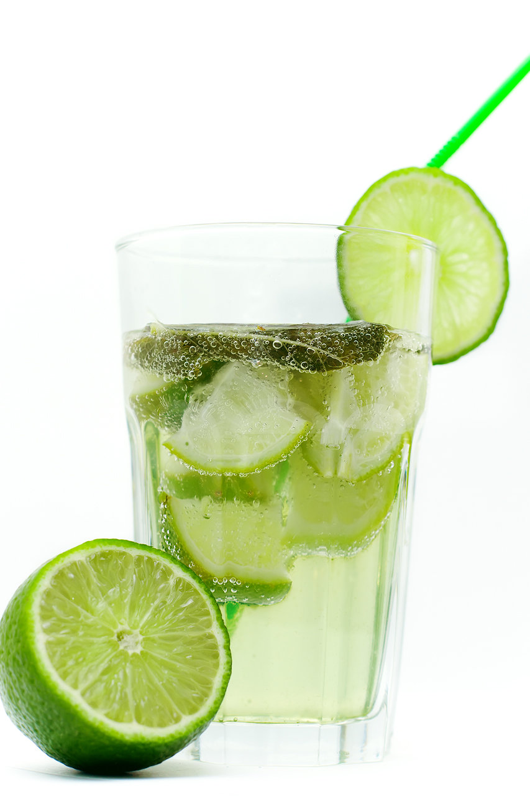

Lemonade – Nimbu Pani – Summer Coolers |
| Rateing |
| prep time:5 minit |
| cook time:10 minit |
| total time:15 minit |
|  |
Ingredients: |
4 glass Water (cold water)
Sugar to taste
2 medium Lemons
Black Salt to taste (Kala Namak)
Pinch of Black pepper (optional)
1 cup Ice cubes
5-6 Mint leaves
|
Instructions: |
|
Take water in a bowl.
Add sugar, salt in water.
Squeeze lemon by squeezer and add lemon juice in it.
Stir till sugar dissolved. Add ice cubes and garnish with mint leaves. |
video: |